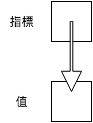

所有權¶
所有權 (ownership) 是 Rust 的核心概念之一，在許多主流語言中沒有強調所有權的觀念，而 Rust 從一開始就放入這個概念，Rust 的安全性和所有權的概念息息相關，但是，這也是 Rust 難以上手的原因。雖然 Rust 官方文件沒有強調參考 (reference)的概念，不過，了解參考，對於了解所有權有相當的幫助。
註：Rust 的參考類似 C/C++ 的指標。
指標與參考¶
指標 (pointer) 本身的值不是資料，而是指向另一個資料的記憶體位置。如下圖：
由於指標本身是整數，透過傳遞指標，不需要拷貝整個原始資料，若資料量較大時，傳遞指標可使得程式更有效率。
不同語言對指標的處理方式大異其趣，C 或 C++ 給使用者很大的自由，讓使用者自行操作指標，而許多高階語言將指標隱藏起來，使用者完全不會碰觸到指標。Rust 則介於兩者之間，雖然平常不需要指標，需要時，Rust 讓使用者有操作指標的自由。
以下是一個 C 語言的例子：
#include <stdio.h>
int main(void) {
int n = 5;
// Get the address of n
int* n_ptr = &n;
// Dereference n_ptr to get n
printf("%d\n", *n_ptr);
return 0;
}
以 Rust 撰寫類似的代碼：
fn main() {
let n = 5;
// Get the reference of n
let n_ref = &n; // & i32
// Dereference n_ref to get n
println!("{}", *n_ref);
}
在本程式中，n_ref 的型別是 & i32，意思是「指向 i32 型別的參考 (reference)」，但其觀念上相當接近指標。
以下是另一個 C++ 中使用指標的例子：
#include <vector>
#include <iostream>
using std::vector;
using std::cout;
using std::endl;
int main() {
vector<int> vec {1, 2, 3};
// Modify vec in-place!
for (auto ptr = vec.begin(); ptr != vec.end(); ptr++) {
*ptr = (*ptr) * (*ptr);
}
// Print out the data of vec in console
for (auto ptr = vec.begin(); ptr != vec.end(); ptr++) {
cout << *ptr << " ";
}
cout << endl;
return 0;
}
在本程式中，我們取得 vec 的元素的指標，解址取得其值，處理後再存回該元素中。以上例子改寫成類似的 Rust 程式碼如下：
fn main() {
let mut vec = vec![1, 2, 3];
// Modify vec in-place!
for item in vec.iter_mut() {
*item = (*item) * (*item);
}
// Print out the data of vec in console
println!("{:?}", vec);
}
同樣地，我們得到該 vector 的參考，解參考取得其值，處理後再存回該元素中。
接下來，我們開始探討 Rust 的所有權。
所有權¶
C 和 C++ 給使用者較大的自由，但對某些指標使用造成的問題，沒有特定的規範。我們來看一個 C 語言的迷途指標 (dangling pointer) 的例子：
#include <stdio.h>
#include <stdlib.h>
int main() {
const int SIZE = 10;
// Allocate memory for the array a.
int* a = (int*) malloc(SIZE * sizeof(int));
// Set the value in a
for (int i = 0; i < SIZE; i++) {
int j = i + 1;
a[i] = j * j;
}
// Share the address of a to a1
int* a1 = a;
// Oh, the memory of a is freed!
free(a);
a = NULL;
/* Now a1 becomes dangling pointer.
Accessing data via a dangling pointer is
an undefined behavior. */
printf("%d\n", a1[3]);
return 0;
}
簡單地說，a 和 a1 指向同一塊記憶體區塊，在釋放 a 的記憶體後，a1 變成迷途指標 (dangling pointer)。在 C 或 C++ 中，沒有規範如何處理這樣的行為，而 Rust 以 所有權 (ownership) 來處理這個問題。見以下程式碼：
fn main() {
let v = vec![1, 2, 3];
// Vector moved from v to v1
let v1 = v;
// Error when accessing v
println!("{}", v[1]);
}
這個程式引發了以下錯誤：
error[E0382]: use of moved value: `v`
以及以下附註：
note: move occurs because `v` has type `std::vec::Vec<i32>`, which does not implement the `Copy` trait
在本程式中，為了避免 v 和 v1 存取同一塊記憶體後，因釋放記憶體而造成迷途指標的問題，Rust 將 v 的所有權轉移到 v1，來避免這個問題發生。然而，以下的程式卻可正常運行：
fn main() {
let x = 3;
// Copy x into x1
let x1 = x;
// No error when accessing x
println!("{}", x);
}
這是因為 Rust 將 x 的值拷貝一份到 x1，故不會有前述問題發生。
在使用函式時，也會發生同樣的狀況。見以下程式：
fn main() {
let v = vec![1, 2, 3];
// v is moved into do_nothing
do_nothing(v);
// Error when accessing v
println!("{}", v[1]);
}
fn do_nothing(v: Vec<i32>) {
// Do nothing here.
}
以下程式，同樣引發以下錯誤：
error[E0382]: use of moved value: `v`
在本程式中，即使我們對 v 沒有進行任何實質的操作，仍然發生了所有權轉移的問題。為了處理上述問題，Rust 引入 borrowing 的機制，也就是我們下文要討論的內容。
Borrowing¶
承接上節的內容，我們來看一個 borrowing 的例子：
fn main() {
let v = vec![1, 2, 3];
// Borrow v to sum
let s = sum(& v);
println!("{}", s);
// v is still accessible
println!("{}", v[1]);
}
fn sum(v: &Vec<i32>) -> i32 {
let mut sum = 0;
for e in v.iter() {
sum += *e;
}
sum
}
在本程式中，Rust 將 v 的所有權暫時借給 sum 之中，待函式運行結束後，再將所有權轉回 v，使得所有權的機制可正常運行。在其他語言中，也有類似的概念，像是 C++ 的參考 (reference)。將以上程式以 C++ 重新改寫如下：
#include <vector>
#include <iostream>
using std::vector;
using std::cout;
using std::endl;
int sum(vector<int> &);
int main() {
vector<int> vec {1, 2, 3};
// Pass the reference of vec into sum
int s = sum(vec);
cout << s << endl;
cout << vec[1] << endl;
return 0;
}
int sum(vector<int> &vec) {
int sum = 0;
for (auto ptr = vec.begin(); ptr != vec.end(); ptr++) {
sum += *ptr;
}
return sum;
}
在本程式中，我們沒有拷貝整個 vec，而是將其位址傳入 sum。不過，在 C++ 程式中，並沒有強調所有權的概念。
註：C++ 的參考和 Rust 的參考是不同的概念。
結合我們先前談的可變性的概念，如果我們要在轉移參數所有權後修改其值，必需要明確地指定可變性。例如，以下的程式會引發錯誤：
fn main() {
let mut v = vec![1, 2, 3];
// Try to modify vec in-place
square_each(& v);
println!("{}", v[1]);
}
fn square_each(v: & Vec<i32>) {
for e in v.iter_mut() {
*e = (*e) * (*e);
}
}
本程式造成以下的錯誤：
error: cannot borrow immutable borrowed content `*v` as mutable
若將程式進行適當的修改，則可正確執行。範例如下：
fn main() {
let mut v = vec![1, 2, 3];
// Modify vec in-place!
square_each(&mut v);
println!("{}", v[1]);
}
fn square_each(v: &mut Vec<i32>) {
for e in v.iter_mut() {
*e = (*e) * (*e);
}
}
雖然以上程式可正確執行，但卻不是一個良好的模式，因為這個程式對 vec 造成了副作用 (side effect)，也就是說，這個程式會更動 vec 的狀態。當然，並不是絕對不能用這樣的方式寫程式，只是，要思考一下，這樣子的效果是否是自己想要的。
Lifetime¶
Lifetime 所要處理的問題¶
假設以下的情形：
- A 取得資源
- A 將資源的所有權借給 B
- A 將資源釋放掉
- B 欲取得資源，造成程式錯誤
而 Rust 透過 lifetime 避免以上問題。如以下範例：
fn main() {
let x;
{
let n = 5;
// Borrow n to y
let y = &n;
// Transfer the ownership from y to x
x = y;
} // n lives until here
// n is no longer available.
println!("{}", x);
}
本程式造成以下錯誤：
error: `n` does not live long enough
在本程式中，y 向 n 借得所有權後，將其轉給 x。但在該區塊結束後，n 的 lifetime 已經結束，實質上已經無法取得 n，而 Rust 偵測到這個問題並在編譯程式時引發相關的錯誤。然而，在 C 或 C++，卻沒有規範上述行為，見以下範例：
#include <iostream>
using std::cout;
using std::endl;
int main() {
int *x;
{
// n become alive here
int n = 5;
// Get the address of n
int* y = &n;
// Share the address of n to x
x = y;
} // n lives until here
// Now, assess n, which is no longer alive
// The behavior is undefined.
cout << *x << endl;
return 0;
}
筆者實測，此程式印出 0，但不同電腦上，可能結果不同，而程式設計者不應依賴其結果。由此例可見 Rust 和 C 或 C++ 在設計上的相異點。
指明 lifetime¶
其實在撰寫函式時，也隱藏著 lifetime 的概念。像是以下的函式
fn foo(x: & i32) {
// Do something
}
若明確指明 lifetime 則變成
fn foo<'a>(x: &'a i32) {
// Do something
}
若參數是可變的，則變成
fn foo<'a>(x: &'a mut i32) {
// Do something
}
其中的 'a 是一個代稱，代表的是 foo 函式的 lifetime，而 'a 不是固定的，可以換成其他的字。由於我們到目前為止，都沒有明確寫出 lifetime，讀者可能會感到困惑，這是由於 Rust 自動推斷 lifetime 的功能 (lifetime elision)，藉此減少使用者輸入。
如果 struct 內的屬性有參考，也要明確指明 lifetime，如下：
struct Foo<'a> {
x: &'a i32,
}
static¶
static 是一個特別的 lifetime 修飾，表示該變數的 lifetime 為整個程式。如下：
fn main() {
let x: &'static str = "Hello, World";
}
也可用在常數，如下：
static FOO: i32 = 5;
fn main() {
let x: &'static i32 = &FOO;
}